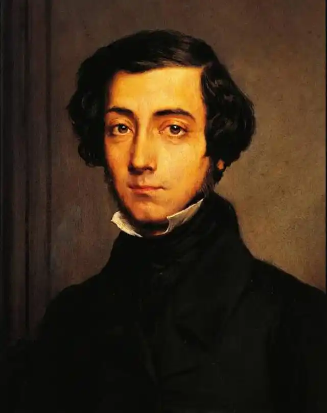
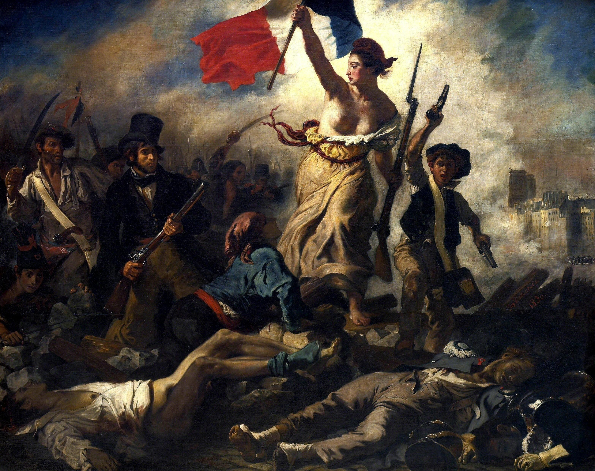
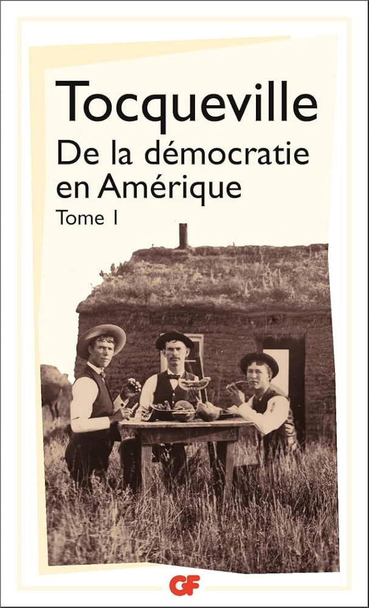

杨照：“民主”的生活长什么样？
《10堂公民课：关于公共生活的大问题》总序（点击跳转收听）>>
大家好，我是杨照，要来为大家介绍新一季的音频节目。这是属于“10堂公民课”当中的第4堂，解说的对象是托克维尔所写的《论美国的民主》。
这本书实际上应该要有一个副标题，叫做“一个法国青年在美国”。为什么要多加这个副标题呢？因为这样就可以让我们了解这本书非常特别的来历。因为讲的是美国的民主，但作者不但不是一个美国人，而且他没有在美国成长。他去到美国的时候还很年轻，因而他就以他在法国的背景、成长的经验，几乎是直觉地感受到、记录下来，他在美国看到最主要和法国不一样的地方。

阿历克西·德·托克维尔（Alexis-Charles-Henri Clérel de Tocqueville，1805—1859），法国历史学家、政治家、社会学家。代表作《论美国的民主》《旧制度与大革命》等。图源网络。
一个中国青年在美国
“一个法国青年在美国”，就会让我自己联想，因为我也曾经差不多是在托克维尔去到美国的年纪去到了美国。
那个时候是1987年。我印象很深刻的，这就是直觉的差异——我去到了我留学要念研究院的学校，进到了宿舍，在宿舍做基本的一些准备。这个时候，第一个，我遇到了所有的这些宿舍里面进进出出的人，不管他们是我同楼层的研究生同学，或者是打扫的工人，或者是管理宿舍的舍监，或者是递送邮件的邮差……每一个人，他们当然都不认识我，但每一个人见到了我，一定都会跟我打招呼。为什么人跟人之间可以这么轻易地就彼此互相打招呼？这件事情让我留下了深刻的印象。
再下来，因为在宿舍基本上门是自动会关闭的，因此每一个人，当你把门打开的时候，几乎都会自动地看看在你的后面有没有其他人，如果有其他人要进，或者是有其他人要出，也几乎每个人都有这样的一种非常自然的习惯，就会帮别人把门开着，让别人可以方便进出。而且就让我学会了第一个自然的对话：这个时候你当然会替帮你开门的人说谢谢，说Thanks，然后他/她会很自然地回应。他/她的回应也很特别，因为都是习惯说Sure，意思是说，“这不值得谢”，或者是，“这本来就是每一个人都会替别人做的事”。这让我留下了非常深刻的印象。
也因为大家都乐于帮助别人，所以我在那里忙活我的宿舍的设备的时候，就有一个研究生同楼层的朋友，他们就来问我说：“哎呀，你少了什么啊？你有没有担心什么？”看一看，有一个人就跟我说：“哎，你的电话还没装！”
当然那个时候我刚从台湾去到美国，所以我的第一个反应就是问他们说，那我要到哪里去申请我的电话？还有，我如果要申请电话，我应该要准备一些什么样的资料等等。他们开头的时候听不懂，后来他们就只是很简单地告诉我：“你现在需要一架电话机。”而那个时候根据我在台湾的经验，电话机是要到电信局去申请的，而电话机的申请就是跟电话门号的申请并纳在一起，这是非常复杂繁琐的申请的手续，而且还需要等待。
但那个同学就告诉我：“你需要一台电话机，你在学校的福利百货公司就可以买得到。我建议你就买一台18元美金的最便宜的电话机就可以了。”然后，电话机怎么装？“太简单了，它上面就会附有电话线。”他就指着宿舍里面墙上的一个插孔告诉我，“买回来之后插上，你就可以打电话了。”
我说：“我就可以打电话了？我不需要申请门号吗？”他说：“你的号码就在那，你自己看，它就写在那。之后，这就是你的电话号码。”我说：“那我可以打长途电话，或者是如果我要打长途电话、国际电话，我应该怎么样申请吗？”一样，没有什么好申请的，你就这样拨号，拨了之后我就可以打到台湾去。
我吓了一跳。因为我吓了一跳，所以让我留下非常深刻的印象，那就是，在美国做太多太多的事情，相较于当时在台湾的生活，都不用申请，都没有很多的行政程序。也就是你有自由，可以这样做，可以那样做，没有人要来管你。
这是一种非常特别的自由的感受。这种自由主要是对照当时我所处的、我所长大的台湾社会，有各式各样的管理的机关，有各式各样管理的规矩。所以每一个人要做任何的事情，你都知道，或你都预期，太多太多的机关、太多太多的人可以管你。你得先了解哪些人可以管你，他们用什么方式管你，他们设定了多少，有哪些复杂的规范，你才能够在生活里面得到你所要的。
美国就不是如此。因此对我来说，当我是一个年轻人在美国的时候，刚刚去到美国，我所得到的最大的冲击，那就是自由，还有自由带来的选择以及选择的责任。
我又记得，去到了学校就要到系里，本来就觉得说，这应该有很多表格要填，然后应该要有很多的程序，包括报道、注册等等。那到了系里，系里就只有一个秘书，然后我就跟秘书问了选课的各种不同的规定。秘书很简单地告诉我，在前面两年，我们系里规定，每个学期至少要选4门课。所以两年，如果你要考博士考之前，你要完成4个学期，每个学期至少4门课，所以就是16门课。
好啦，这我听懂了。接下来我就问秘书：“那我可以多修吗？”秘书看着我说：“当然了，你要修多少你就修多少。只要你自己能够吸收，你能够消化，你能够拿得到成绩，你尽管去修。”
接下来我又问秘书：“那关于修课有些什么样的限制？”因为我所念的那个博士班是东亚系和历史系合开的一个博士班，所以我就问说：“东亚系所有的课、历史系所有的课，我都能修吗？”秘书就又看着我，然后微笑，告诉我说：“什么课系的课你都可以修。”我说：“真的吗？怎么可能？我不是属于东亚跟历史系，所以我不是所有的课都应该修东亚系跟历史系的吗？”秘书就告诉我说：“年轻人，你尽管去看，尽管去翻这一大本的目录，这个目录里面所有列出来的课，都可以算在你每个学期的四门课当中。”
我又吓了一大跳，因为哈佛大学给我的，最重要的就是这么宽广的自由。在追求知识上，你自己去选你要上什么课，你自己替你如何学习来负责。
所以对我来说，刚刚去到了美国，就有这样的一个清楚的对照。我也庆幸，因为当时我还那么年轻。还有，我对于美国虽然有一定的认识跟理解，可是这种直觉所带来的震撼，让我会对于美国是什么样的一个自由的社会，美国给予人什么样的一种选择的自由，留下了最深刻的印象。
理想中的革命与制度里的平等
那相应地，这位法国青年托克维尔，他看到了什么呢？他看到的最重要的，就是这本书书名上所说的“美国的民主”。而这里又对照，为什么他会特别看到“美国的民主”呢？因为他来自于法国大革命，事实上还遗留着非常深刻的印象。而且法国大革命的那种理想口号仍然在法国的社会上空持续地徘徊，是让每一个人都仍然记忆深刻的时代。
这是什么样的口号呢？“Liberté, Égalité, Fraternité”，连我们都很熟悉，“自由、平等、博爱”。多么美好的这三大口号！而这三大口号，其中的任何一项都能够让我们怦然心动。
可是对于托克维尔这样的一个法国青年来说，他所知道的，却是从法国大革命提出了这样的理想口号，实际上却是让这个国家陷入了长期的动乱。
更进一步地，为什么长期动乱？你就深知，并不是因为理想没有实现，反而倒过来，你会意识到，理想的这三大口号其实彼此之间是冲突的。有的时候你追求更高的自由，就会破坏平等。还有，如果我们每一个人都可以做自由的选择，你又如何会必然地去选择要爱其他人，像爱你的兄弟一样，要有这样的一种博爱的精神呢？所以换句话说，法国大革命经过了几十年之后，到底要如何落实革命的理想？革命成功了，所带来的并不是理想的落实。

《自由引导人民》，是法国画家欧仁·德拉克罗瓦为纪念1830年法国七月革命创作的油画。七月革命以后，托克维尔前往美国考察。图源网络。
因此，在这样的一种时代的困境底下，这位法国青年去到了美国，他突然之间有了这样的一份觉悟，那就是，要落实理想，尤其是法国大革命的“自由、平等、博爱”的理想，需要什么？需要一套制度。而这一套看起来最有用、最能够落实理想的制度就是民主制度。而民主制度，在“自由、平等、博爱”这三大理想当中，其实它非常清楚地突显了其中的“平等”的原则。
换句话说，这里有一份特别的吊诡。如果我们要并行去追求这三个理想，自由、平等、博爱，结果既没有自由，也没有平等，也没有博爱。而美国所示范的是，以“平等”作为重心，突显平等，让平等作为最重要的追求的目标，也是管辖所有的一切制度，也是笼罩所有制度设计的原则。反而在这样的一个情况底下，没有刻意追求自由，人们却有自由；没有刻意追求博爱，人们却能发挥博爱的精神。于是，托克维尔就从这样的直觉的比较以及他所得到的这一份结论，写成了这一本非常深刻、非常有启发性的书。
练习民主
但我们也可以更进一步地如此对照，我可以强烈、清楚地感受到，这位法国青年去到美国的时候，他对美国所留下的印象跟我自己所留下的印象、我的感受是不一样的。
我们在前面为大家在“公民课”的第三堂课介绍了美国宪法，也特别深入地去为大家分析美国宪法的设计精神。你也会发现，托克维尔他眼中所看到、所描述的美国的这样的一个民主社会、民主制度，跟美国宪法原初的设计精神其实也并不一致。
宪法是因为来自于例如州权之间要如何好好地安排，联邦跟州可以用什么样的方式，让它有着既能够发挥各州彼此互相合作的好处，又能够防止各州发生冲突，更进一步还要能够防止联邦欺压各州。另外，美国宪法最关键的一件事情，它是规范人民跟政府之间的关系。人民让渡了一些什么样的权利给政府，政府必须依照什么样的承诺来运用人民所交付给他/她的权利，这是美国宪法主要的关心所在。
这样的美国宪法所制造出来的美国政治制度，经过了几十年的时间之后，却在托克维尔他所亲身感受的时候，他看到所产生现实运作的结果。这里有一件非常重要的事情，那就是，宪法的层次和托克维尔他所观察、他所经历的层次非常的不一样。因为他确确实实去到了美国，所以他就特别描述了，这也是他在法国没有看到、没有经验过的，那就是美国人非常旺盛的、在地的公共精神。那也就在这里，我们了解，托克维尔的这项主张，可以跟我们的公民有最密切的连接。
什么叫做“公民”？如何培养“公民”？那就是在一般的日常生活里，公民的“公”的部分，那是公共的事务，公共的关怀，变成了他/她生活当中其中的一部分。
在美国，有人聚集的地方形成了城镇，城镇就会有Town Meeting，Town Meeting就将城镇里面虽然我们看起来好像很琐碎的一些公共的事物，来进行充分的讨论，让每个人都知道，我的生活环境里有哪一些公共的事务，应该由我来做决定。
长期习惯了，所以美国人首先非常在意公共事务。其次，他们对于公共事务究竟应该如何讨论，更进一步，每一个人在对公共事务关怀、要做决定的时候，应该考虑什么，你要如何表达你自己的意见，你要如何说服别人，甚至更进一步地，你要如何听别人对于公共事务的意见……这都变成了非常重要的训练。

《论美国的民主》（De la démocratie en Amérique），图源网络
美国之所以可以在民主制度底下有这样的平等的精神，事实上必须要追溯到，这是生活层次的公共关怀。这就不只是高层次的理论，而是民主需要习惯，需要练习。经过了习惯、练习，公民是被打造出来的。
那尤其是在这个层次，如何去打造公民，公民如何在反反复复的公共思考跟公共讨论乃至于公共意见的表达跟说服当中，不断地让自己成长，让自己可以承担更多的公民责任……这真的非常值得我们参考，更值得我们反思。甚至可以这样说，对于这样的一种环境，让我们去习惯，去练习公共事务的讨论、公共事务的说服，让我们去习惯、让我们去练习民主，这是我们作为公民值得争取，也应该要争取的。
从这样的角度切入，在这个音频节目当中，就让我们随着这位法国青年，进入到美国民主最底层、最生活面的环境里。
感谢您的收听，我们下次再会。